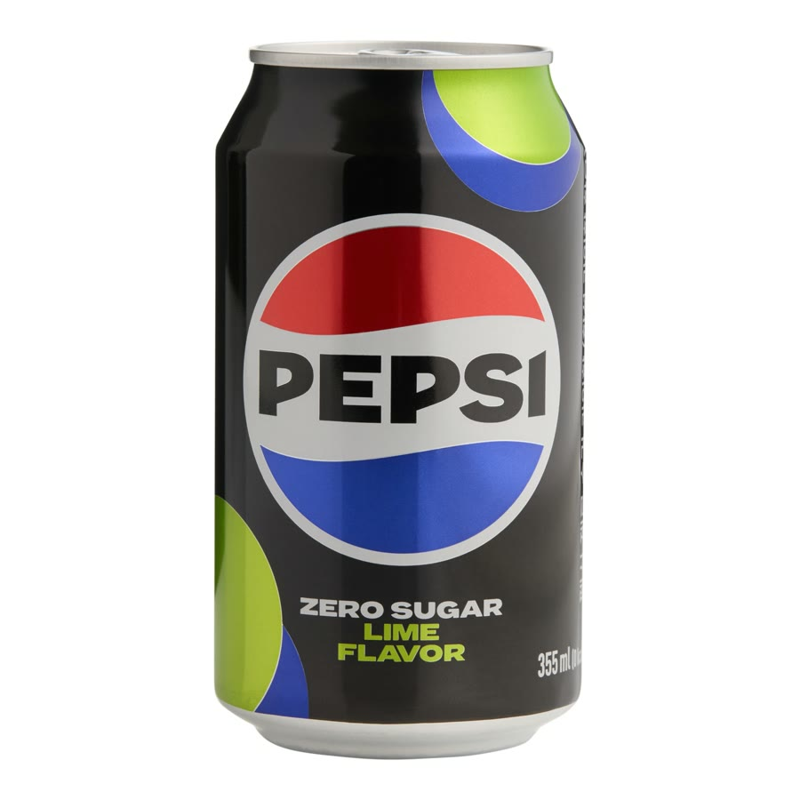

Faks & posel · Pravice potrošnikov
Avtomat v avli Nedu zavrača Pepsi Lime Zero
Nejc Nedeljko, med prijatelji znan kot Nedo ali včasih Nedo Medo, je strastni ljubitelj Pepsi Zero Sugar z okusom limete. Zadnje dni pa se sekira: avtomat v avli faksa mu ne pusti kupiti njegove pijače.
- Ime
- Nejc Nedeljko
- Vzdevka
- Nedo, Nedo Medo
- Strast
- Pepsi Zero Sugar, okus limete
- Problem
- Avtomat v avli zavrača plačilo
- Posledice
- Neuradno: prisiljen piti navadno Coca-Colo
Za večino študentov je avtomat v avli samo avtomat. Za Neda je bil dolgo več kot to. Bil je zanesljiv partner, ki ga je vsak dan med predavanji čakal z isto hladno pločevinko: Pepsi brez sladkorja, z okusom limete. Ta odnos je zdaj resno načet.
Dokazni predmet A

Kaj se dogaja v avli
Po pričevanjih sošolcev se zgodba vsak dan ponovi. Nedo pride do avtomata, izbere svojo pijačo in poskusi plačati. Avtomat plačilo zavrne. Nedo poskusi znova, s kartico, s kovanci, z vljudnim nasmehom. Avtomat vztraja. Drugi študentje medtem brez težav kupujejo vse ostalo.
»Izgleda osebno,« pravi eden od sošolcev, ki je dogajanje opazoval iz vrste. »Za vse ostale avtomat deluje. Samo za Neda in samo za limeto ne.«
Sumljivo: prejšnji teden je Vuko Spindiju kupil prav ta Pepsi. Je bila to zadnja pločevinka, ki jo je avtomat še izdal?
Prisiljen v Coca-Colo
Po neuradnih podatkih je bil Nedo zaradi pomanjkanja prisiljen piti celo navadno Coca-Colo. S sladkorjem. Priče opisujejo težak trenutek: dolg pogled v pločevinko, globok vdih in tiho »no, pa dajmo«. Uredništvo se je odločilo, da fotografij s tega dogodka ne objavi.
Nedo sam stanja ne želi komentirati. Iz njegove okolice pa prihajajo informacije, da se sekira bolj, kot priznava.
Razmišlja o pritožbi
Nedo naj bi resno razmišljal o uradni pritožbi. Uredništvu Zadnje vrste je uspelo pridobiti osnutek, ki ga objavljamo v celoti.
Spoštovani,
sem dolgoletni in zvest kupec Pepsi Zero Sugar z okusom limete v avtomatu v avli. V zadnjih dneh mi avtomat brez razloga zavrača plačilo, medtem ko drugim kupcem pijače izdaja normalno.
Zaradi tega sem bil prisiljen kupiti izdelek konkurence. To me je čustveno prizadelo. Prosim za hitro rešitev, vračilo zaupanja in po možnosti en brezplačen Pepsi za opravičilo.
Lep pozdrav,
Nedo
Teorije
- Avtomat ima nekaj proti Nedu. Morda ga je kdaj preveč trdo stresel, ko se je pločevinka zataknila.
- Zaloge so pošle. In avtomat tega noče priznati, zato raje zavrne plačilo.
- Zarota Coca-Cole. Kdo ima največ od tega, da Nedo pije Coca-Colo? Odgovor je očiten.
- Vuko je pokupil vse. Po zadnji akciji reševanja Spindija je to vsaj teoretično možno.
Podjetniška lekcija
Nedova zgodba je šolski primer za vaje iz marketinga. Zvest kupec, ki vsak dan kupi isti izdelek, je najdragocenejša stranka, ki jo podjetje ima. Če ga razočaraš, ne izgubiš ene pločevinke, ampak stotine. Še huje: pošlješ ga h konkurenci. Avtomat v avli je s tem naredil napako, ki bi jo vsak profesor označil z rdečo.
Kaj naj naredi Nedo?
Svetuj mu. Če veš, kje na faksu še prodajajo Pepsi Lime Zero, mu to takoj javi.
Moj nasvet
Satira. Avtomat ni zares nič osebno proti Nedu, vsaj ne dokazano. Zgodba ni povezana z nobeno blagovno znamko ali upravljavcem avtomata.